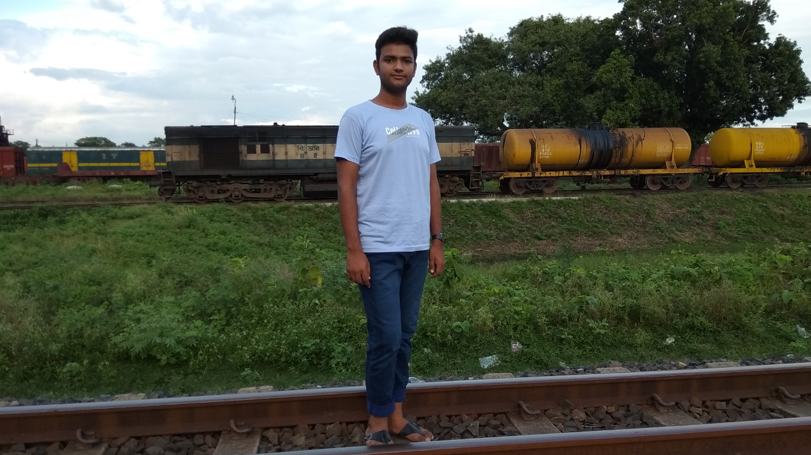

.png)
.png)
During these decades use of electrical engineering increased dramatically.Nowadays we are living in such a well developed world which is firmly stands on the blessings of Electricity. Without electricity such virtual words like modern civilization and development is meaningless; that’s why to maintain the consistency of modernism Electricity is must. For producing worthy electrical Engineers the renowned institution in Technical sector, Global Touch Institute is teaching the course of Diploma-in-Electrical Engineering directed by Bangladesh Technical Education Board under the Ministry of Education of The People’s Republic of Bangladesh. After completing the Diploma course in Electrical Engineering from Global Touch Institute the students will be worthy Engineers and he/she will be well established as a proud citizen of the country and can play an effective role in the development of our self and for the country. In this scholarship based educational system there have free books for all the students and free learning for the meritorious students.
My name is Md Shaikot Raihan. I am 20 years old. I live in Naogaon. I am a student of diploma in electrical engineering. I read in Dynamic Polytechnic Institute - Naogaon college. My collage starts at 9am and finishes at 1 p.m. I am studying Bangla , English, Math, Social science, Electrical circuits-2, Religion in the college. I go to college on and return home by rickshaw. All the teachers of my college are very friendly and helpful. I love my college very much.
I live with my parents. I have one brother and one sister. They are students too. My father is a businessman. My mother is a housewife. On holidays, she cooks special dishes. She works at home. My hobby is gardening. I work in my garden in the afternoon. I enjoy cricket very much. During leisure I read novels , story books an watch T.V. I always help the poor. I go to my village home during holidays.
Learn more.jpg)
Working conditions for electricians vary by specialization. Generally an electrician's work is physically demanding such as climbing ladders and lifting tools and supplies. Occasionally an electrician must work in a cramped space or on scaffolding, and may frequently be bending, squatting or kneeling, to make connections in awkward locations. Construction electricians may spend much of their days in outdoor or semi-outdoor loud and dirty work sites. Industrial electricians may be exposed to the heat, dust, and noise of an industrial plant. Power systems electricians may be called to work in all kinds of adverse weather to make emergency repairs.
Last updated 3 mins ago
As an electrical engineer, you'll design, develop and maintain electrical control systems and components to required specifications. Your work will focus on. economyquality, reliability, safety, sustainability.economyquality, reliability, safety, sustainability..
Last updated 3 mins ago
.png)
Electrical contractors are businesses that employ electricians to design, install, and maintain electrical systems. Contractors are responsible for generating bids for new jobs, hiring tradespeople for the job, providing material to electricians in a timely manner, and communicating with architects, electrical and building engineers, and the customer to plan and complete the finished product.
Last updated 3 mins ago